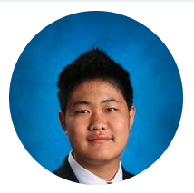
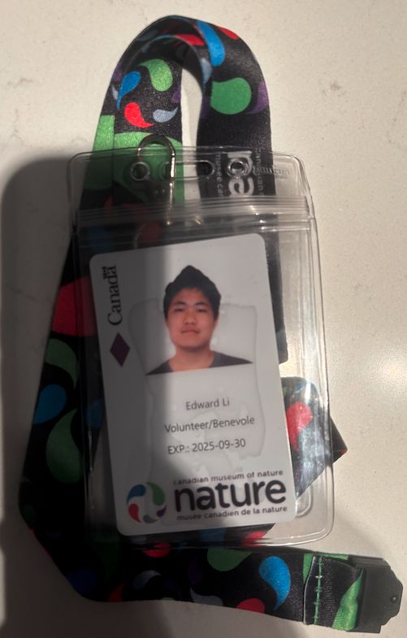
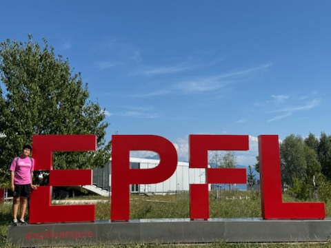
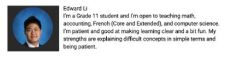
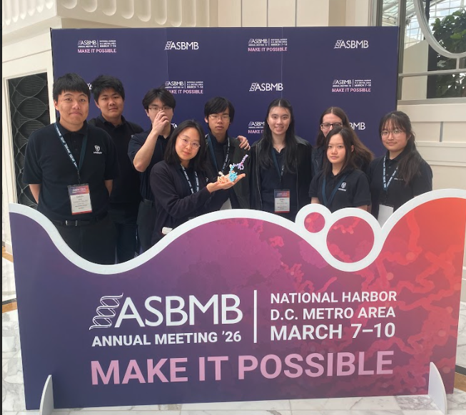
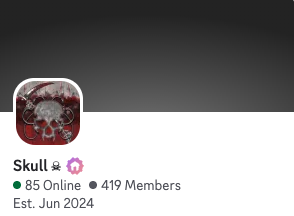

edward.li@ashbury.ca
I’m a Grade 11 student currently in the IB program with a strong interest in technology and software development. I enjoy working on projects that challenge me to think logically and solve problems step by step, especially using Python and basic object-oriented programming. Through both school and personal projects, I’ve started building a foundation in coding while learning how to approach problems more efficiently and independently.

EDUCATION
High School Diploma (Full IB)
From grade 7 - present
Ottawa, Canada
Graduating 2027
EXPERIENCES
Canadian Museum of Nature
Ottawa, Canada
At the Canadian Museum of Nature, I worked as an Interpreter Assistant where I supported visitor experiences through communication, customer service, and educational interaction. I welcomed guests, answered questions, and helped create an engaging environment for the public.

June / August 2025
French Computer Science Python Camp
EPFL, Switzerland
During my time at EPFL, I participated in a French computer science program focused on game theory and problem-solving using Python. I worked with other students on projects while also building my own understanding of core Python concepts in a university learning environment.

July 2025
Independent / School Based
Ottawa, Canada
I supported younger students across multiple subjects including French, accounting, and computer science. This experience helped me improve my communication, patience, and ability to explain difficult ideas in simpler steps.

December 2025
Ashbury School Club
Ottawa, Canada
As part of the SMART Team, I worked on a research project focused on the BMAL1 protein and its role in circadian rhythms. Our team built and presented a university-level research poster and 3D model. At the ASBMB conference in Washington, D.C., I introduced our project and explained the research to attendees.

November 2025
400+ Community
Online
I lead an online community of over 400 members, focusing on organization, event planning, participation, and consistency. This helped me build leadership, communication, and basic entrepreneurship skills such as promotion and community management.

November 2025
CONTACT
6138908582
edward.li@ashbury.ca